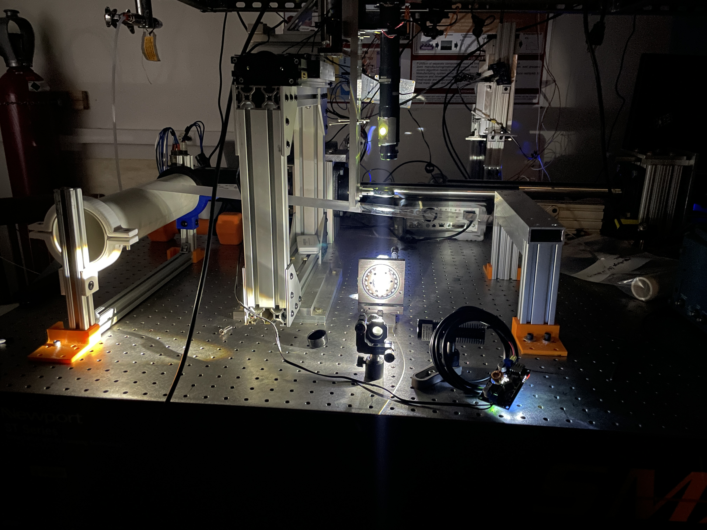
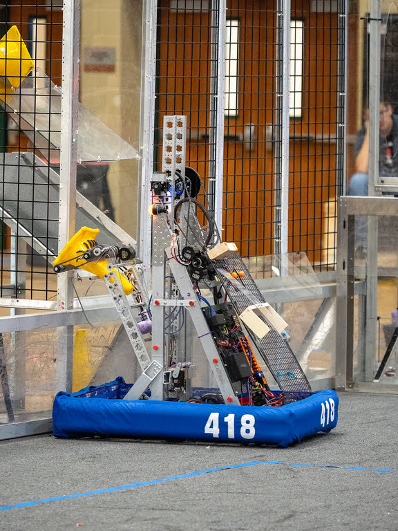

Kushaal Singh
I am a Mechanical Engineering and Plan II Honors student at UT Austin. I like making things and thinking about things.
Experience
Longhorn Racing Electric
I joined LHR in 2023 and in 2024 became the Drivetrain lead.

Paradigm Robotics
I joined Paradigm Robotics in 2024 after hearing about the interesting challenges of the drivetrain from a friend who was already working with them. This is a robotics startup trying to create a robot to aid firefighters in search and rescue by entering burning buildings. It is surprising how many things, which might normally be taken for granted, break down at such high temperatures (~600 degrees C). You can't use standard lubricant, loctite, and you have to analyze the thermal expansion of everything. I joined after a majority of the design was concluding as we moved into the manufacturing phase, so much of my work was done in that area. It is a fascinating project and I'm happy to be a part of it.
Nanoscale Design & Manufacturing Laboratory
As part of this lab, I helped study the effects of stress in roll-to-roll manufacturing, where a role of a polymer is imprinted with nano-size electronics. The hope with this research is that it might overcome the size and flexibility limitations of silicon wafers, but it has a shortcoming in it's inconsistency. As such, we sought to study the stress and strain using the photoelastic effect, where the retardation (distance between peaks of light rays) was measured as the stress was varied in magnitude and direction. My main contribution was creating the testing set up, in addition to collecting the data. I designed and manufactured the jigs, which ended up actually being the first time I ever used a manual mill.
I applied to and ended up attending UT because of, in part, the research that goes on here. There are so many fascinating boundaries being pushed and I am glad I was able to be part of one such lab.
LASA Robotics - Team 418 Purple Haze
My highschool robotics team has left me with many happy memories to look back upon and many skills to be proud of. Initially, I learned mostly technical skills on the robotics team, as one might expect. This is where I first interacted with soldering, CAD, and manufacturing. By the end, in my Senior year of highschool, I was stepping into the role of team captain for a team which didn't properly rebuild itself after Covid. Our struggles the year before had left myself, along with many of my teammates, eager to rebuild in a grand way. I think it was this year, during which the mentor staff expanded from 3 mentors to 6, our student recruitment expanded by a large degree, and our budget turning positive that taught me the most. Our mentors' philosophy was twofold - firstly, that the mentors were there to advise and keep us safe, but not to build the robot, and secondly, that the team was meant to make good people over good robots. As a result, I was able to take a large amount of responsibility for the team and help the team grow a lot, while growing myself. I firmly believe, with much vigor, that this formative experience changed me for the better. Now, though I've moved on and am no longer such a direct part of the team, I'll always remember it and the experiences it gave me.
Former robotics team captains are a dime a dozen, and all have incredible technical skills, but I don't think I have met a single one who had the same responsibilities over their team as I did in high school.
